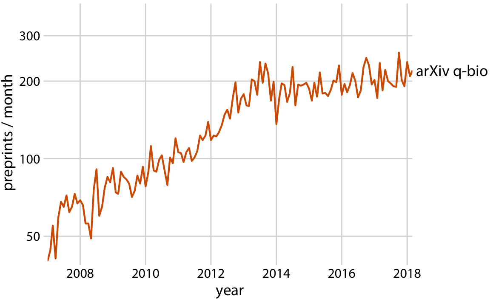
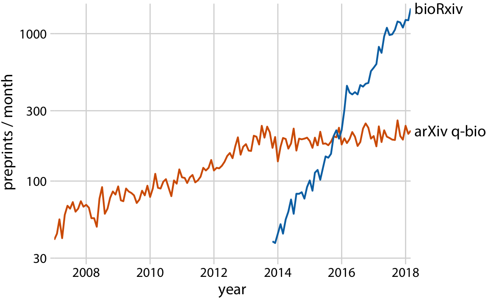

penguins |>filter(!is.na(bill_ratio)) |>ggplot(aes(x =fct_rev(species), y = bill_ratio)) +#ggdist::stat_halfeye(# aes(color = species, fill = species), # point_color = NA, .width = 0, adjust = 0.5,# width = 0.75, justification = -0.4, # alpha = 0.3#) +#geom_boxplot(# aes(color = species), width = 0.42, outlier.shape = NA#) + #geom_point(# aes(color = species), shape = 21,# size = 2, # position = position_jitter(seed = 1, width = 0.12)#) + #geom_point(# aes(fill = species), # color = "transparent",# shape = 21,# size = 2, # alpha = .3,# position = position_jitter(seed = 1, width = 0.12)#) +# stat_summary(# geom = "text", # fun = "median",# aes(label = round(after_stat(y), 2), color = species),# fontface = "bold",# size = 4.5,# vjust = -3.5#) + coord_flip(xlim =c(1.2, NA), clip ="off") +scale_y_continuous(limits =c(1.57, 3.8),breaks =seq(1.6, 3.8, by =0.2) ) +scale_color_manual(values = pal, guide ="none") +scale_fill_manual(values = pal, guide ="none") +labs(x =NULL,y ="Bill Ratio", title ="Bill Ratio of Palmer Penguins", subtitle ="Distribution of bill ratios, estimated as bill length divided by bill depth.") +theme_minimal() +theme(panel.grid.minor =element_blank(), panel.grid.major.y =element_blank(),axis.ticks =element_blank())
Building Plots in a Presentation
Code
penguins |>filter(!is.na(bill_ratio)) |>ggplot(aes(x =fct_rev(species), y = bill_ratio)) +#ggdist::stat_halfeye(# aes(color = species, fill = species), # point_color = NA, .width = 0, adjust = 0.5,# width = 0.75, justification = -0.4, # alpha = 0.3#) +#geom_boxplot(# aes(color = species), width = 0.42, outlier.shape = NA#) + geom_point(aes(color = species), shape =21,size =2, position =position_jitter(seed =1, width =0.12) ) +geom_point(aes(fill = species), color ="transparent",shape =21,size =2, alpha = .3,position =position_jitter(seed =1, width =0.12) ) +# stat_summary(# geom = "text", # fun = "median",# aes(label = round(after_stat(y), 2), color = species),# fontface = "bold",# size = 4.5,# vjust = -3.5#) + coord_flip(xlim =c(1.2, NA), clip ="off") +scale_y_continuous(limits =c(1.57, 3.8),breaks =seq(1.6, 3.8, by =0.2) ) +scale_color_manual(values = pal, guide ="none") +scale_fill_manual(values = pal, guide ="none") +labs(x =NULL,y ="Bill Ratio", title ="Bill Ratio of Palmer Penguins", subtitle ="Distribution of bill ratios, estimated as bill length divided by bill depth.") +theme_minimal() +theme(panel.grid.minor =element_blank(), panel.grid.major.y =element_blank(),axis.ticks =element_blank())
Building Plots in a Presentation
Code
penguins |>filter(!is.na(bill_ratio)) |>ggplot(aes(x =fct_rev(species), y = bill_ratio)) +#ggdist::stat_halfeye(# aes(color = species, fill = species), # point_color = NA, .width = 0, adjust = 0.5,# width = 0.75, justification = -0.4, # alpha = 0.3#) +geom_boxplot(aes(color = species), width =0.42, outlier.shape =NA ) +geom_point(aes(color = species), shape =21,size =2, position =position_jitter(seed =1, width =0.12) ) +geom_point(aes(fill = species), color ="transparent",shape =21,size =2, alpha = .3,position =position_jitter(seed =1, width =0.12) ) +# stat_summary(# geom = "text", # fun = "median",# aes(label = round(after_stat(y), 2), color = species),# fontface = "bold",# size = 4.5,# vjust = -3.5#) + coord_flip(xlim =c(1.2, NA), clip ="off") +scale_y_continuous(limits =c(1.57, 3.8),breaks =seq(1.6, 3.8, by =0.2) ) +scale_color_manual(values = pal, guide ="none") +scale_fill_manual(values = pal, guide ="none") +labs(x =NULL,y ="Bill Ratio", title ="Bill Ratio of Palmer Penguins", subtitle ="Distribution of bill ratios, estimated as bill length divided by bill depth.") +theme_minimal() +theme(panel.grid.minor =element_blank(), panel.grid.major.y =element_blank(),axis.ticks =element_blank())
Building Plots in a Presentation
Code
penguins |>filter(!is.na(bill_ratio)) |>ggplot(aes(x =fct_rev(species), y = bill_ratio)) + ggdist::stat_halfeye(aes(color = species, fill = species), point_color =NA, .width =0, adjust =0.5,width =0.75, justification =-0.4, alpha =0.3 ) +geom_boxplot(aes(color = species), width =0.42, outlier.shape =NA ) +geom_point(aes(color = species), shape =21,size =2, position =position_jitter(seed =1, width =0.12) ) +geom_point(aes(fill = species), color ="transparent",shape =21,size =2, alpha = .3,position =position_jitter(seed =1, width =0.12) ) +stat_summary(geom ="text", fun ="median",aes(label =round(after_stat(y), 2), color = species),fontface ="bold",size =4.5,vjust =-3.5 ) +coord_flip(xlim =c(1.2, NA), clip ="off") +scale_y_continuous(limits =c(1.57, 3.8),breaks =seq(1.6, 3.8, by =0.2) ) +scale_color_manual(values = pal, guide ="none") +scale_fill_manual(values = pal, guide ="none") +labs(x =NULL,y ="Bill Ratio", title ="Bill Ratio of Palmer Penguins", subtitle ="Distribution of bill ratios, estimated as bill length divided by bill depth.") +theme_minimal() +theme(panel.grid.minor =element_blank(), panel.grid.major.y =element_blank(),axis.ticks =element_blank())
Story Telling with Visualizations
What is a story?
“A story is a set of observations, facts, or events, true or invented, that are presented in a specific order such that they create an emotional reaction in the audience.” Claus O. Wilke


Source: Claus O. Wilke, Data Visualization
Story Telling with Visualizations
Figures for a broad audience
Common misconceptions:
the audience can immediately infer the points you’re trying to make
the audience has the ability to rapidly interpret complex visualizations
It is okay to incorporate some complexity into your visualizations, especially if the data/field are inherently complex; however, you may need to guide the audience in the direction of the story you’re trying to tell:
narrative titles
Source: New York Times
annotations/colors to highlight important components of the visualization
Source: New York Times
make your figures memorable without adding too much complexity
Source: Claus O. Wilke, Data Visualization
use different visualization tools for different types of analyses
Source: Claus O. Wilke, Data Visualization
build up to complex figures
e.g. incrementally adding layers of the raincloud plot
Interactive Annotations with plotly
Code
library(plotly)pp <- penguins |>filter(!is.na(bill_ratio)) |>ggplot(aes(x =fct_rev(species), y = bill_ratio)) +geom_boxplot(aes(color = species), width =0.42, outlier.shape =NA) +coord_flip(xlim =c(1.2, NA), clip ="off") +scale_y_continuous(limits =c(1.57, 3.8),breaks =seq(1.6, 3.8, by =0.2) ) +scale_color_manual(values = pal, guide ="none") +scale_fill_manual(values = pal, guide ="none") +labs(x =NULL,y ="Bill Ratio", title ="Bill Ratio of Palmer Penguins", subtitle ="Distribution of bill ratios, estimated as bill length divided by bill depth.")ggplotly(pp)
“Reproducibility is required to create lasting knowledge about the world. It means that everything that was done—all of it, end-to-end—can be independently redone.” Rohan Alexander
Why is reproducibility important?
Future you can more easily figure out/recall what analysis you did.
More easily make adjustments to your code/visualizations/analysis.
You and others can validate the findings.
Provide code examples to others who want to extend the research.
Making Your Work Reproducible
Keep all relevant files (e.g., code, raw data, etc.) in the same project directory - use the Project feature in R!
Use relative paths instead of absolute paths when importing data.
All cleaning and analysis should be done using code. Avoid “by-hand” manipulation of data (e.g., cleaning in Excel).
If any manual steps are unavoidable, keep a very thorough record and clearly document those steps to share with others.
Provide narrative to accompany your code (e.g., comments, quarto documents that combine code and prose).
Keep a record of the software used, including package versions.